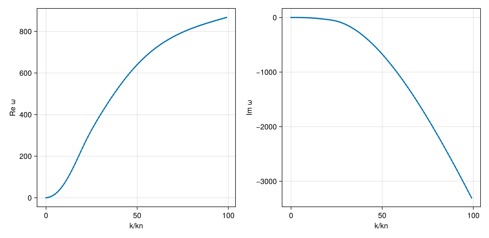
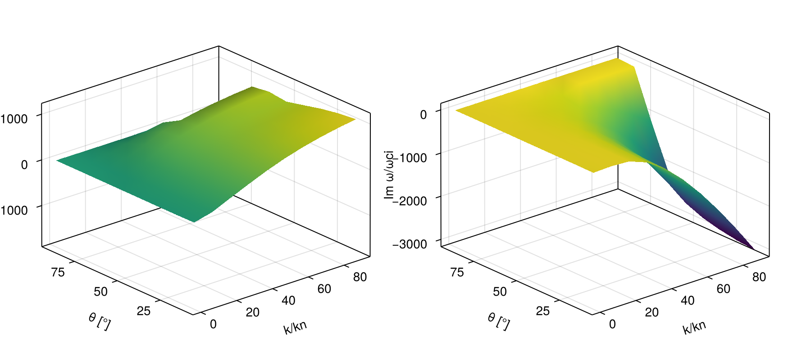

Case: Dispersion surface tracking (2D scan)
This page demonstrates how to construct a dispersion surface by scanning a 2D parameter space (wave number k and propagation angle θ) and using branch tracking to follow a consistent mode across the scan.
We consider a typical electron–proton plasma and scan:
kin normalized unitsk/k_n, wherek_n = ω_pi/cθfrom 5° to 90°
using PlasmaBO
using PlasmaPopulations: gyrofrequency, plasma_frequency
using PlasmaPopulations: C_SI as c0
B0 = 5e-9 # [Tesla]
n = 5.0e6
T = 12.94
p, e = Proton(), Electron()
plasma = Plasma(Population(p, BiMaxwellian; T, n), Population(e, BiMaxwellian; T, n); B0)
wn = abs(gyrofrequency(p, B0))
wpi = plasma_frequency(p, n)
kn = wpi / c0
wci = wn
# Kinetic solver settings (adjust upward for accuracy)
N = 33Dispersion Curve Scan
julia> using CairoMakiejulia> θ = deg2rad(45);julia> sweep = AngleSweep(; k = collect(0.01:1:100) .* kn, theta = θ);
A Seed target follows the one branch through a root near ω0 at at, here the whistler, damped by electron cyclotron resonance at large k:
at = Wavevector(; k = 50kn, theta = θ)
whistler = solve(DispersionProblem(plasma, Seed((640 - 672im) * wn, at), sweep), BOHH(; N))
dispersion_diagram(whistler; k_unit = kn, omega_unit = wn, xlabel = "k/kn")
Dispersion Surface Scan (2D)
julia> ks = collect(0.1:10:100.0) .* kn;julia> θs = deg2rad.(10.0:10.0:90.0);julia> # Seed at a reference k and angle; the branch is linked over the (k, θ) grid at = Wavevector(; k = 90.5kn, theta = deg2rad(20))Wavevector{Float64}(0.0003039496862398723, 0.0008350948995943665)julia> surface2d = solve(DispersionProblem(plasma, Seed((1000 - 3000im) * wn, at), AngleSweep(; k = ks, theta = θs)), BOHH(; N))DispersionSolution(retcode=Success, omega=ComplexF64[-2.2744759696669696 - 7.5564552314615145im -4.892850972297542 - 4.651672481055373im … -1.4558230478523821 - 0.01380431607961005im -1.4368249733931313 + 1.0248764307560631e-13im; 44.618053699958644 - 0.2542587388701182im 42.87538325683515 - 0.9557494547137277im … -2.8815809238370167 - 1.3915158349699759im -1.7459056271619573 + 1.196985506984114e-12im; … ; 493.68013720752185 - 1155.9284355223933im 475.7477594153208 - 1138.0880955948273im … 16.659993224118686 - 11.053342983149056im -832.6176885369929 + 5.106522202159919e-11im; 524.0186950784342 - 1445.8858060194777im 504.18548795144915 - 1426.8967018472858im … 18.559841665793865 - 12.433737400832754im -842.0543119154605 - 6.067933281004793e-10im], 90 evals, 1.46 s)
let fig = Figure(size = (900, 400))
for (i, (part, label)) in enumerate(((real, "Re ω/ωci"), (imag, "Im ω/ωci")))
ax = Axis3(fig[1, i]; xlabel = "k/kn", ylabel = "θ [°]", zlabel = label)
surface!(ax, ks ./ kn, rad2deg.(θs), part.(surface2d.omega) ./ wn)
end
fig
end